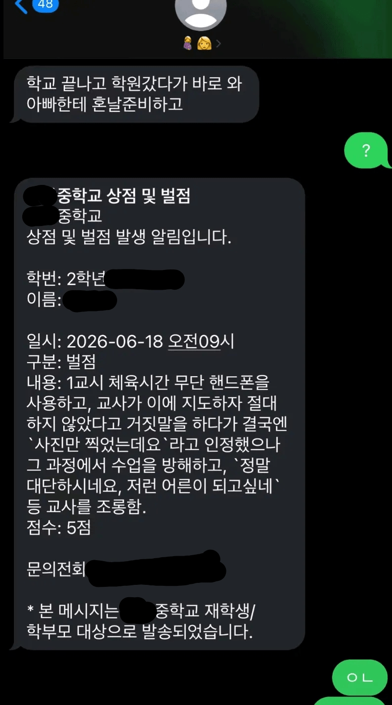

진짜 화가 많이 났어요

진짜 화가 많이 났어요
와 진짜 ㅋㅋㅋ 집안 교육도 쉽지 않음 ㅋㅋ

문잠궈.
? 하나 보낸것부터 맞을 준비해야겠는데
옳게 된 사용법
부모 무서운지 알아야함
ㅇㄴ 가 아니가 아니구나
동생이 어른들한테 싸가지없이 나올 때마다 바로 뒤통수 후렸었는데 하물며 자식놈이 저러면ㅋㅋㅋㅋ
호로새끼 회초리 들고와라 ㅋㅋ 말투교정부터 해야겠네
올린것도 본인이네 니는 존나 맞으면서 커야겠다
말하는 싸가지가 그냥 ㅋㅋㅋ 진짜 줘 패고싶네
진짜 자식교육좀 똑바로했으면 좋겠다.
나때는 진짜 교사들이 쓰레기였는데 지금은 학부모가 쓰레기인 시대
근데 씨발 진짜 애새끼 처맞으면 어른 무서운줄 안다니까 ㅋㅋㅋㅋㅋㅋㅋ
근데 부모한테만 처맞으면 부모만 무서워한다는게 문제임
질풍노도의 시기잖아. 부모님한테 쳐맞으면서 고쳐야지 어떻게 하겠어.